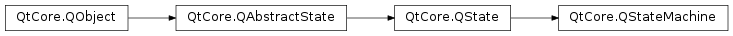

QStateMachine¶
Note
This class was introduced in Qt 4.6.
Synopsis¶
Functions¶
- def
addDefaultAnimation(animation) - def
addState(state) - def
cancelDelayedEvent(id) - def
clearError() - def
configuration() - def
error() - def
errorString() - def
globalRestorePolicy() - def
isAnimated() - def
isRunning() - def
postDelayedEvent(event, delay) - def
postEvent(event[, priority=NormalPriority]) - def
removeDefaultAnimation(animation) - def
removeState(state) - def
setAnimated(enabled) - def
setGlobalRestorePolicy(restorePolicy)
Virtual functions¶
- def
beginMicrostep(event) - def
beginSelectTransitions(event) - def
endMicrostep(event) - def
endSelectTransitions(event)
Slots¶
- def
setRunning(running) - def
start() - def
stop()
Signals¶
- def
runningChanged(running)
Detailed Description¶
The
PySide2.QtCore.QStateMachineclass provides a hierarchical finite state machine.
PySide2.QtCore.QStateMachineis based on the concepts and notation of Statecharts.PySide2.QtCore.QStateMachineis part of The State Machine Framework .A state machine manages a set of states (classes that inherit from
PySide2.QtCore.QAbstractState) and transitions (descendants ofPySide2.QtCore.QAbstractTransition) between those states; these states and transitions define a state graph. Once a state graph has been built, the state machine can execute it.PySide2.QtCore.QStateMachine‘s execution algorithm is based on the State Chart XML (SCXML) algorithm. The framework’s overview gives several state graphs and the code to build them.Use the
PySide2.QtCore.QStateMachine.addState()function to add a top-level state to the state machine. States are removed with thePySide2.QtCore.QStateMachine.removeState()function. Removing states while the machine is running is discouraged.Before the machine can be started, the
initial statemust be set. The initial state is the state that the machine enters when started. You can thenPySide2.QtCore.QStateMachine.start()the state machine. Thestarted()signal is emitted when the initial state is entered.The machine is event driven and keeps its own event loop. Events are posted to the machine through
PySide2.QtCore.QStateMachine.postEvent(). Note that this means that it executes asynchronously, and that it will not progress without a running event loop. You will normally not have to post events to the machine directly as Qt’s transitions, e.g.,PySide2.QtCore.QEventTransitionand its subclasses, handle this. But for custom transitions triggered by events,PySide2.QtCore.QStateMachine.postEvent()is useful.The state machine processes events and takes transitions until a top-level final state is entered; the state machine then emits the
finished()signal. You can alsoPySide2.QtCore.QStateMachine.stop()the state machine explicitly. Thestopped()signal is emitted in this case.The following snippet shows a state machine that will finish when a button is clicked:
button = QPushButton() machine = QStateMachine() s1 = QState() s1.assignProperty(button, "text", "Click me") s2 = QFinalState() s1.addTransition(button, SIGNAL('clicked()'), s2) machine.addState(s1) machine.addState(s2) machine.setInitialState(s1) machine.start()This code example uses
PySide2.QtCore.QState, which inheritsPySide2.QtCore.QAbstractState. ThePySide2.QtCore.QStateclass provides a state that you can use to set properties and invoke methods onPySide2.QtCore.QObjects when the state is entered or exited. It also contains convenience functions for adding transitions, e.g.,PySide2.QtCore.QSignalTransitions as in this example. See thePySide2.QtCore.QStateclass description for further details.If an error is encountered, the machine will look for an
error state, and if one is available, it will enter this state. The types of errors possible are described by theQStateMachine.Errorenum. After the error state is entered, the type of the error can be retrieved withPySide2.QtCore.QStateMachine.error(). The execution of the state graph will not stop when the error state is entered. If no error state applies to the erroneous state, the machine will stop executing and an error message will be printed to the console.
-
class
PySide2.QtCore.QStateMachine([parent=nullptr])¶ -
class
PySide2.QtCore.QStateMachine(childMode[, parent=nullptr]) Parameters: - childMode –
PySide2.QtCore.QState.ChildMode - parent –
PySide2.QtCore.QObject
Constructs a new state machine with the given
parent.Constructs a new state machine with the given
childModeandparent.- childMode –
-
PySide2.QtCore.QStateMachine.EventPriority¶ This enum type specifies the priority of an event posted to the state machine using
PySide2.QtCore.QStateMachine.postEvent().Events of high priority are processed before events of normal priority.
Constant Description QStateMachine.NormalPriority The event has normal priority. QStateMachine.HighPriority The event has high priority.
-
PySide2.QtCore.QStateMachine.Error¶ This enum type defines errors that can occur in the state machine at run time. When the state machine encounters an unrecoverable error at run time, it will set the error code returned by
PySide2.QtCore.QStateMachine.error(), the error message returned byPySide2.QtCore.QStateMachine.errorString(), and enter an error state based on the context of the error.Constant Description QStateMachine.NoError No error has occurred. QStateMachine.NoInitialStateError The machine has entered a PySide2.QtCore.QStatewith children which does not have an initial state set. The context of this error is the state which is missing an initial state.QStateMachine.NoDefaultStateInHistoryStateError The machine has entered a PySide2.QtCore.QHistoryStatewhich does not have a default state set. The context of this error is thePySide2.QtCore.QHistoryStatewhich is missing a default state.QStateMachine.NoCommonAncestorForTransitionError The machine has selected a transition whose source and targets are not part of the same tree of states, and thus are not part of the same state machine. Commonly, this could mean that one of the states has not been given any parent or added to any machine. The context of this error is the source state of the transition.
-
PySide2.QtCore.QStateMachine.addDefaultAnimation(animation)¶ Parameters: animation – PySide2.QtCore.QAbstractAnimationAdds a default
animationto be considered for any transition.
-
PySide2.QtCore.QStateMachine.addState(state)¶ Parameters: state – PySide2.QtCore.QAbstractStateAdds the given
stateto this state machine. The state becomes a top-level state.If the state is already in a different machine, it will first be removed from its old machine, and then added to this machine.
-
PySide2.QtCore.QStateMachine.beginMicrostep(event)¶ Parameters: event – PySide2.QtCore.QEventThis function is called when the state machine is about to do a microstep.
The default implementation does nothing.
-
PySide2.QtCore.QStateMachine.beginSelectTransitions(event)¶ Parameters: event – PySide2.QtCore.QEventThis function is called when the state machine is about to select transitions based on the given
event.The default implementation does nothing.
-
PySide2.QtCore.QStateMachine.cancelDelayedEvent(id)¶ Parameters: id – PySide2.QtCore.intReturn type: PySide2.QtCore.boolCancels the delayed event identified by the given
id. The id should be a value returned by a call toPySide2.QtCore.QStateMachine.postDelayedEvent(). Returnstrueif the event was successfully cancelled, otherwise returnsfalse.
-
PySide2.QtCore.QStateMachine.clearError()¶ Clears the error string and error code of the state machine.
-
PySide2.QtCore.QStateMachine.configuration()¶ Return type: Returns the maximal consistent set of states (including parallel and final states) that this state machine is currently in. If a state
sis in the configuration, it is always the case that the parent ofsis also in c. Note, however, that the machine itself is not an explicit member of the configuration.
-
PySide2.QtCore.QStateMachine.endMicrostep(event)¶ Parameters: event – PySide2.QtCore.QEventThis function is called when the state machine has finished doing a microstep.
The default implementation does nothing.
-
PySide2.QtCore.QStateMachine.endSelectTransitions(event)¶ Parameters: event – PySide2.QtCore.QEventThis function is called when the state machine has finished selecting transitions based on the given
event.The default implementation does nothing.
-
PySide2.QtCore.QStateMachine.error()¶ Return type: PySide2.QtCore.QStateMachine.ErrorReturns the error code of the last error that occurred in the state machine.
-
PySide2.QtCore.QStateMachine.errorString()¶ Return type: unicode Returns the error string of the last error that occurred in the state machine.
-
PySide2.QtCore.QStateMachine.globalRestorePolicy()¶ Return type: PySide2.QtCore.QState.RestorePolicyReturns the restore policy of the state machine.
-
PySide2.QtCore.QStateMachine.isAnimated()¶ Return type: PySide2.QtCore.boolReturns whether animations are enabled for this state machine.
-
PySide2.QtCore.QStateMachine.isRunning()¶ Return type: PySide2.QtCore.bool
-
PySide2.QtCore.QStateMachine.postDelayedEvent(event, delay)¶ Parameters: - event –
PySide2.QtCore.QEvent - delay –
PySide2.QtCore.int
Return type: PySide2.QtCore.intPosts the given
eventfor processing by this state machine, with the givendelayin milliseconds. Returns an identifier associated with the delayed event, or -1 if the event could not be posted.This function returns immediately. When the delay has expired, the event will be added to the state machine’s event queue for processing. The state machine takes ownership of the event and deletes it once it has been processed.
You can only post events when the state machine is running.
- event –
-
PySide2.QtCore.QStateMachine.postEvent(event[, priority=NormalPriority])¶ Parameters: - event –
PySide2.QtCore.QEvent - priority –
PySide2.QtCore.QStateMachine.EventPriority
Posts the given
eventof the givenpriorityfor processing by this state machine.This function returns immediately. The event is added to the state machine’s event queue. Events are processed in the order posted. The state machine takes ownership of the event and deletes it once it has been processed.
You can only post events when the state machine is running or when it is starting up.
- event –
-
PySide2.QtCore.QStateMachine.removeDefaultAnimation(animation)¶ Parameters: animation – PySide2.QtCore.QAbstractAnimationRemoves
animationfrom the list of default animations.
-
PySide2.QtCore.QStateMachine.removeState(state)¶ Parameters: state – PySide2.QtCore.QAbstractStateRemoves the given
statefrom this state machine. The state machine releases ownership of the state.
-
PySide2.QtCore.QStateMachine.runningChanged(running)¶ Parameters: running – PySide2.QtCore.bool
-
PySide2.QtCore.QStateMachine.setAnimated(enabled)¶ Parameters: enabled – PySide2.QtCore.boolSets whether animations are
enabledfor this state machine.
-
PySide2.QtCore.QStateMachine.setGlobalRestorePolicy(restorePolicy)¶ Parameters: restorePolicy – PySide2.QtCore.QState.RestorePolicySets the restore policy of the state machine to
restorePolicy. The default restore policy isQState.DontRestoreProperties.
-
PySide2.QtCore.QStateMachine.setRunning(running)¶ Parameters: running – PySide2.QtCore.bool
-
PySide2.QtCore.QStateMachine.start()¶ Starts this state machine. The machine will reset its configuration and transition to the initial state. When a final top-level state (
PySide2.QtCore.QFinalState) is entered, the machine will emit thefinished()signal.Note
A state machine will not run without a running event loop, such as the main application event loop started with
QCoreApplication.exec()orQApplication.exec().See also
started()finished()PySide2.QtCore.QStateMachine.stop()PySide2.QtCore.QState.initialState()PySide2.QtCore.QStateMachine.setRunning()
-
PySide2.QtCore.QStateMachine.stop()¶ Stops this state machine. The state machine will stop processing events and then emit the
stopped()signal.See also
stopped()PySide2.QtCore.QStateMachine.start()PySide2.QtCore.QStateMachine.setRunning()
© 2018 The Qt Company Ltd. Documentation contributions included herein are the copyrights of their respective owners. The documentation provided herein is licensed under the terms of the GNU Free Documentation License version 1.3 as published by the Free Software Foundation. Qt and respective logos are trademarks of The Qt Company Ltd. in Finland and/or other countries worldwide. All other trademarks are property of their respective owners.